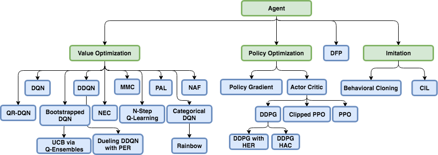

Agents¶
Coach supports many state-of-the-art reinforcement learning algorithms, which are separated into three main classes - value optimization, policy optimization and imitation learning. A detailed description of those algorithms can be found by navigating to each of the algorithm pages.
{kind=link}
Agents
- Actor-Critic
- Behavioral Cloning
- Bootstrapped DQN
- Categorical DQN
- Conditional Imitation Learning
- Clipped Proximal Policy Optimization
- Deep Deterministic Policy Gradient
- Direct Future Prediction
- Double DQN
- Deep Q Networks
- Dueling DQN
- Mixed Monte Carlo
- N-Step Q Learning
- Normalized Advantage Functions
- Neural Episodic Control
- Persistent Advantage Learning
- Policy Gradient
- Proximal Policy Optimization
- Rainbow
- Quantile Regression DQN
-
class
rl_coach.base_parameters.AgentParameters(algorithm: rl_coach.base_parameters.AlgorithmParameters, exploration: ExplorationParameters, memory: MemoryParameters, networks: Dict[str, rl_coach.base_parameters.NetworkParameters], visualization: rl_coach.base_parameters.VisualizationParameters = <rl_coach.base_parameters.VisualizationParameters object>)[source]¶ Parameters: - algorithm – A class inheriting AlgorithmParameters. The parameters used for the specific algorithm used by the agent. These parameters can be later referenced in the agent implementation through self.ap.algorithm.
- exploration – Either a class inheriting ExplorationParameters or a dictionary mapping between action space types and their corresponding ExplorationParameters. If a dictionary was used, when the agent will be instantiated, the correct exploration policy parameters will be used according to the real type of the environment action space. These parameters will be used to instantiate the exporation policy.
- memory – A class inheriting MemoryParameters. It defines all the parameters used by the memory module.
- networks – A dictionary mapping between network names and their corresponding network parmeters, defined as a class inheriting NetworkParameters. Each element will be used in order to instantiate a NetworkWrapper class, and all the network wrappers will be stored in the agent under self.network_wrappers. self.network_wrappers is a dict mapping between the network name that was given in the networks dict, and the instantiated network wrapper.
- visualization – A class inheriting VisualizationParameters and defining various parameters that can be used for visualization purposes, such as printing to the screen, rendering, and saving videos.
-
class
rl_coach.agents.agent.Agent(agent_parameters: rl_coach.base_parameters.AgentParameters, parent: Union[LevelManager, CompositeAgent] = None)[source]¶ Parameters: agent_parameters – A AgentParameters class instance with all the agent parameters -
act() → rl_coach.core_types.ActionInfo[source]¶ Given the agents current knowledge, decide on the next action to apply to the environment
Returns: An ActionInfo object, which contains the action and any additional info from the action decision process
-
call_memory(func, args=())[source]¶ This function is a wrapper to allow having the same calls for shared or unshared memories. It should be used instead of calling the memory directly in order to allow different algorithms to work both with a shared and a local memory.
Parameters: - func – the name of the memory function to call
- args – the arguments to supply to the function
Returns: the return value of the function
-
choose_action(curr_state)[source]¶ choose an action to act with in the current episode being played. Different behavior might be exhibited when training or testing.
Parameters: curr_state – the current state to act upon. Returns: chosen action, some action value describing the action (q-value, probability, etc)
-
collect_savers(parent_path_suffix: str) → rl_coach.saver.SaverCollection[source]¶ Collect all of agent’s network savers :param parent_path_suffix: path suffix of the parent of the agent
(could be name of level manager or composite agent)Returns: collection of all agent savers
-
create_networks() → Dict[str, rl_coach.architectures.network_wrapper.NetworkWrapper][source]¶ Create all the networks of the agent. The network creation will be done after setting the environment parameters for the agent, since they are needed for creating the network.
Returns: A list containing all the networks
-
emulate_act_on_trainer(transition: rl_coach.core_types.Transition) → rl_coach.core_types.ActionInfo[source]¶ This emulates the act using the transition obtained from the rollout worker on the training worker in case of distributed training. Given the agents current knowledge, decide on the next action to apply to the environment :return: an action and a dictionary containing any additional info from the action decision process
-
emulate_observe_on_trainer(transition: rl_coach.core_types.Transition) → bool[source]¶ This emulates the observe using the transition obtained from the rollout worker on the training worker in case of distributed training. Given a response from the environment, distill the observation from it and store it for later use. The response should be a dictionary containing the performed action, the new observation and measurements, the reward, a game over flag and any additional information necessary. :return:
-
get_predictions(states: List[Dict[str, numpy.ndarray]], prediction_type: rl_coach.core_types.PredictionType)[source]¶ Get a prediction from the agent with regard to the requested prediction_type. If the agent cannot predict this type of prediction_type, or if there is more than possible way to do so, raise a ValueException.
Parameters: - states – The states to get a prediction for
- prediction_type – The type of prediction to get for the states. For example, the state-value prediction.
Returns: the predicted values
-
get_state_embedding(state: dict) → numpy.ndarray[source]¶ Given a state, get the corresponding state embedding from the main network
Parameters: state – a state dict Returns: a numpy embedding vector
-
handle_episode_ended() → None[source]¶ Make any changes needed when each episode is ended. This includes incrementing counters, updating full episode dependent values, updating logs, etc. This function is called right after each episode is ended.
Returns: None
-
init_environment_dependent_modules() → None[source]¶ Initialize any modules that depend on knowing information about the environment such as the action space or the observation space
Returns: None
-
learn_from_batch(batch) → Tuple[float, List, List][source]¶ Given a batch of transitions, calculates their target values and updates the network.
Parameters: batch – A list of transitions Returns: The total loss of the training, the loss per head and the unclipped gradients
-
observe(env_response: rl_coach.core_types.EnvResponse) → bool[source]¶ Given a response from the environment, distill the observation from it and store it for later use. The response should be a dictionary containing the performed action, the new observation and measurements, the reward, a game over flag and any additional information necessary.
Parameters: env_response – result of call from environment.step(action) Returns: a boolean value which determines if the agent has decided to terminate the episode after seeing the given observation
-
parent¶ Get the parent class of the agent
Returns: the current phase
-
phase¶ The current running phase of the agent
Returns: RunPhase
-
post_training_commands() → None[source]¶ A function which allows adding any functionality that is required to run right after the training phase ends.
Returns: None
-
prepare_batch_for_inference(states: Union[Dict[str, numpy.ndarray], List[Dict[str, numpy.ndarray]]], network_name: str) → Dict[str, numpy.core.multiarray.array][source]¶ Convert curr_state into input tensors tensorflow is expecting. i.e. if we have several inputs states, stack all observations together, measurements together, etc.
Parameters: - states – A list of environment states, where each one is a dict mapping from an observation name to its corresponding observation
- network_name – The agent network name to prepare the batch for. this is needed in order to extract only the observation relevant for the network from the states.
Returns: A dictionary containing a list of values from all the given states for each of the observations
-
register_signal(signal_name: str, dump_one_value_per_episode: bool = True, dump_one_value_per_step: bool = False) → rl_coach.utils.Signal[source]¶ Register a signal such that its statistics will be dumped and be viewable through dashboard
Parameters: - signal_name – the name of the signal as it will appear in dashboard
- dump_one_value_per_episode – should the signal value be written for each episode?
- dump_one_value_per_step – should the signal value be written for each step?
Returns: the created signal
-
reset_evaluation_state(val: rl_coach.core_types.RunPhase) → None[source]¶ Perform accumulators initialization when entering an evaluation phase, and signal dumping when exiting an evaluation phase. Entering or exiting the evaluation phase is determined according to the new phase given by val, and by the current phase set in self.phase.
Parameters: val – The new phase to change to Returns: None
-
reset_internal_state() → None[source]¶ Reset all the episodic parameters. This function is called right before each episode starts.
Returns: None
-
restore_checkpoint(checkpoint_dir: str) → None[source]¶ Allows agents to store additional information when saving checkpoints.
Parameters: checkpoint_dir – The checkpoint dir to restore from Returns: None
-
run_pre_network_filter_for_inference(state: Dict[str, numpy.ndarray]) → Dict[str, numpy.ndarray][source]¶ Run filters which where defined for being applied right before using the state for inference.
Parameters: state – The state to run the filters on Returns: The filtered state
-
save_checkpoint(checkpoint_prefix: str) → None[source]¶ Allows agents to store additional information when saving checkpoints.
Parameters: checkpoint_prefix – The prefix of the checkpoint file to save Returns: None
-
set_environment_parameters(spaces: rl_coach.spaces.SpacesDefinition)[source]¶ Sets the parameters that are environment dependent. As a side effect, initializes all the components that are dependent on those values, by calling init_environment_dependent_modules
Parameters: spaces – the environment spaces definition Returns: None
-
set_incoming_directive(action: Union[int, float, numpy.ndarray, List]) → None[source]¶ Allows setting a directive for the agent to follow. This is useful in hierarchy structures, where the agent has another master agent that is controlling it. In such cases, the master agent can define the goals for the slave agent, define it’s observation, possible actions, etc. The directive type is defined by the agent in-action-space.
Parameters: action – The action that should be set as the directive Returns:
-
set_session(sess) → None[source]¶ Set the deep learning framework session for all the agents in the composite agent
Returns: None
-
train() → float[source]¶ Check if a training phase should be done as configured by num_consecutive_playing_steps. If it should, then do several training steps as configured by num_consecutive_training_steps. A single training iteration: Sample a batch, train on it and update target networks.
Returns: The total training loss during the training iterations.
-
update_log() → None[source]¶ Updates the episodic log file with all the signal values from the most recent episode. Additional signals for logging can be set by the creating a new signal using self.register_signal, and then updating it with some internal agent values.
Returns: None
-
update_step_in_episode_log() → None[source]¶ Updates the in-episode log file with all the signal values from the most recent step.
Returns: None
-
update_transition_before_adding_to_replay_buffer(transition: rl_coach.core_types.Transition) → rl_coach.core_types.Transition[source]¶ Allows agents to update the transition just before adding it to the replay buffer. Can be useful for agents that want to tweak the reward, termination signal, etc.
Parameters: transition – the transition to update Returns: the updated transition
-